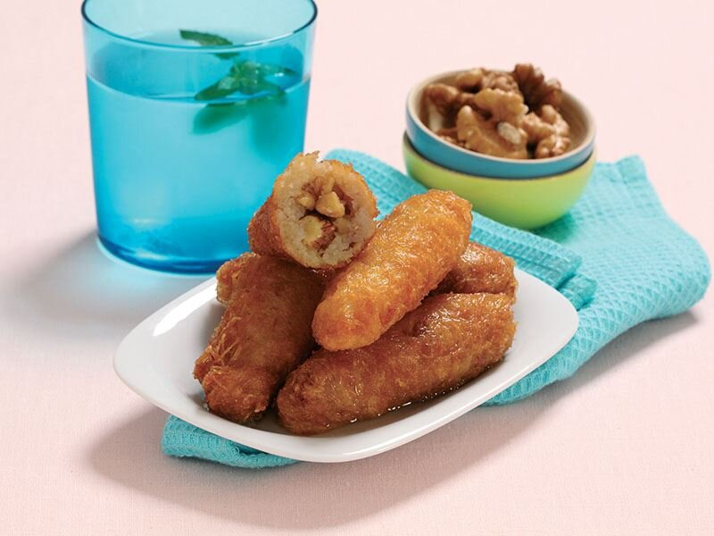

Erzurum mutfağıyla özdeşleşen kadayıf dolması, tel kadayıfların cevizli harç ile doldurulmasıyla hazırlanır. Ufalanmış cevizle kadayıfla sarıldıktan sonra yağda kızartılır. Daha sonra sıcak şerbet ile ıslatılır. Özellikle bayramlarda çok ilgi gören kadayıf dolması, kaymak ile birlikte servis edilebilir. Malzemeler hazırsa, kadayıf dolması tarifi için detaylara geçebiliriz.
Tarif:Aziz Aykut
|  |
Kadayıf Dolması Icin Malzemeler
Kızartmak İçin
Şerbeti İçin
Kadayıf Dolması Nasil Yapilir?
Afiyet olsun |